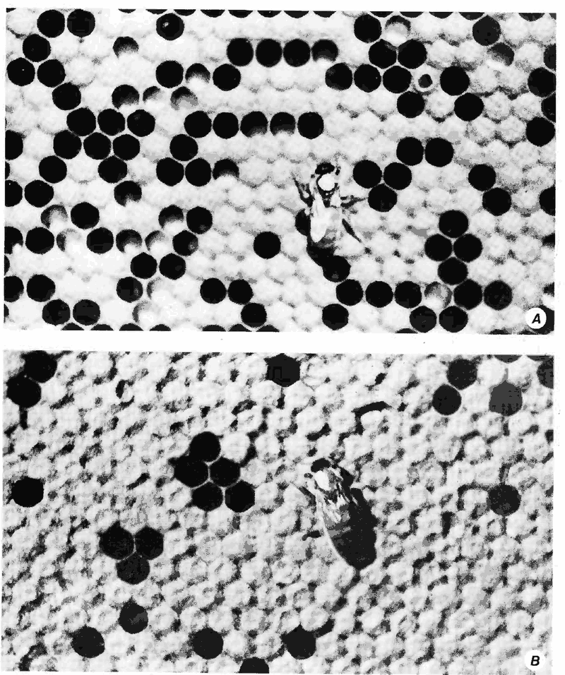
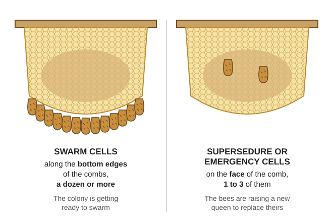
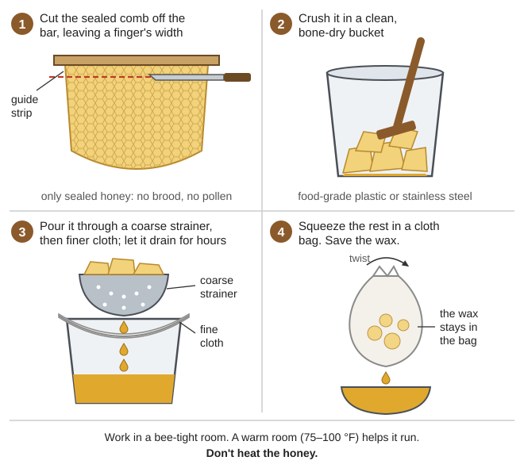
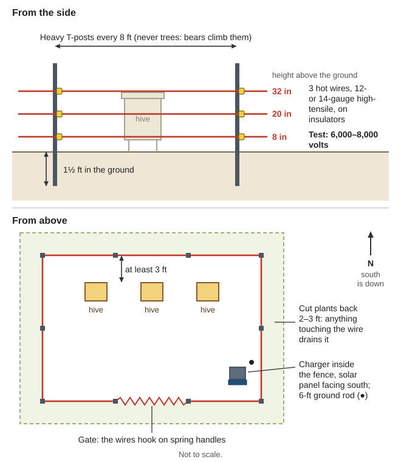

How to keep honey bees with no bee-supply store, no bought queens and no mite strips: hives you can build from scrap, gear you can make, free bees from swarms and bee trees, the bee year in the Illinois Valley, queens, swarms, mites and foulbrood, feeding and wintering through wet winters, honey and wax, bears, stings, and how many hives a family needs for sweetener and pollination. The bee books are in Animals\Bees; the Oregon State backyard bulletin and the beneficial-insects bulletin are in Gardening-Food, honey processing is in Food-From-Scratch\Wild-and-Local-Staples, wax and candles in Homestead-Skills\Soap-Candles, and bears in Animals\Planning-Predators-Toxic-Plants.
Anyone who has had a whole-body reaction to a sting (hives all over, wheezing, faintness) must not work bees without epinephrine at hand. Scrape stingers out at once; don't pinch them.
Swarms are your only new bees now. Catch them March–June, set bait hives, and keep at least 3 colonies so one dead queen or one bad winter doesn't end your beekeeping (rule of thumb).
Count mites every month from spring to fall and act at 1–2 mites per 100 bees. Unchecked, mites double monthly and kill a colony in 2–3 years.
Leave about 60 lb of honey on each colony for winter here, and harvest only sealed comb.
Burn American foulbrood — combs, frames and honey — and never feed honey from hives you don't know.
Electric-fence the hives against black bears: wires at 8, 20 and 32 inches, 6,000+ volts.
Beeswax catches fire. Melt it only in or over water, never over a bare flame, and never throw water on burning wax.
🐝 How a colony works
A colony is one queen (the only egg-layer), several to 60,000 workers and, in spring and summer, a few hundred drones (males) (USDA AH 335, p. 36). The colony, not the bee, is the animal you keep.
Left to right: worker, queen, drone. The queen is longer, with a long tapering abdomen (AH 335, p. 36).
The egg stage is 3 days for all three (p. 33): eggs standing in cells mean a queen laid within the last 3 days.
A virgin queen flies to mate 5–6 days after emerging, mates with 8–12 drones, and lays 2–5 days later (p. 44). Delayed over 3 weeks, she will likely lay only drones (p. 35).
Bees forage mostly within 2 km (1¼ miles), up to 7 km when they must (FAO Forest, p. 77) — about 12,500 acres (AH 335, p. 43).
Which bees: there are no Africanized bees in Oregon (OSU EM 9186, p. 14). Keep the gentle colonies that winter well with low mite counts and raise queens from them: local bees are better adapted than imported ones (FAO 2006, p. 36), and "some locally derived stocks" resist mites (HBHC, p. 41).
With no extractor or foundation, build top-bar hives; keep any Langstroth boxes you have — they work with crush-and-strain too (rule of thumb). Don't rely on frame hives unless their parts can be made locally (FAO Forest, p. 45).
Building a top-bar hive from scrap wood
Wood: seasoned (green wood warps), durable, no cracks or chemical smells (FAO Forest, p. 44); no treated lumber (rule of thumb).
Top bars exactly 35 mm (1⅜ in) wide, all the same: too narrow crowds the combs, too wide gets extra "brace comb" between them (pp. 43–44). It matches Langstroth frame spacing, 1⅜ in (AH 335, p. 52).
Comb guide: a strip of beeswax down the centre of each bar's underside (FAO Forest, p. 44), or a saw groove filled with melted wax (rule of thumb).
Size(rule of thumb): inside 36–42 in long (26–30 bars), 10–12 in deep, about 15 in wide at the top; bars rest across the side walls. Sides sloping in toward the bottom keep comb off the walls; straight sides work if you cut the attachments (p. 45).
Entrance: two or three 1-inch holes at one end, with corks (AH 335, p. 73 uses 1-inch auger holes). A follower board cut to the hive's shape shrinks the space for a small colony (rule of thumb); match hive space to colony strength (FAO 2006, p. 38).
The hive in the list above; what matters most is that every bar is exactly the same width (a diagram drawn for this guide).
Building Langstroth boxes from scrap
The two numbers that matter: the bee space, about ⅜ in — smaller gaps get glued with propolis, bigger ones filled with comb (AH 335, p. 9) — and 10 frames 1⅜ in centre to centre (p. 52).
Copy the drawing (AH 335, p. 53) or a borrowed factory box. Standard US sizes (rule of thumb): deep box 19⅞ × 16¼ in outside, 9⅝ in tall (18⅜ × 14¾ inside); deep frame 19 in top bar, 9⅛ in tall. Make every box the same so they swap (p. 53).
No foundation? Give frames a wax starter strip like a top bar (FAO 2006, p. 12), or cast sheets in a plaster-of-Paris press (FAO Forest, p. 114).
Where to put the hives
Morning sun, facing southeast, out of the wind (OSU EM 9186, p. 5), with afternoon shade in our hot summers: shaded colonies can make 50% more honey in strong sun; white paint helps (FAO Forest, p. 47). Comb softens above 35 °C (95 °F) in the hive (p. 107).
Space and colour the hives so you can work from the side and young bees don't drift (OSU EM 9186, p. 5; AH 335, p. 33). A 6-ft fence or hedge in front lifts the flight path over people's heads (OSU EM 9186, p. 6).
Start with no more than 10 colonies in one place (FAO Forest, p. 47).
Clothes: light-coloured, smooth; bees go for dark, rough or woolly cloth, suede and leather (AH 335, p. 148). Tie cuffs and trouser legs; wash off the sting smell after (FAO Forest, pp. 46, 49). Gloves: long gauntlets, or a plastic bag over each hand held with a band (p. 46).
Smoker: a fuel can with bellows, made by a smith; fuel is dry cow dung, burlap or cardboard (p. 46), or dry punky rotten wood, which smoulders for hours (Kephart, p. 368). Puff cool smoke, never close enough to scorch bees (FAO Forest, p. 48): at the entrance first, then gently under the lid (AH 335, p. 41).
Feeder: a lidded pail with nail holes, upside down over the bars or inner-cover hole (AH 335, p. 50). Entrance reducer and robbing screen (OSU, p. 10; HBHC, p. 42). Mite-wash jar: a quart jar, #8 screen in the lid, a ½-cup scoop (HBHC, p. 8).
Solar wax melter (see "Beeswax: rendering and uses"). An extractor can be built from a plastic drum and bicycle parts (FAO Forest, p. 92) — only for wired frames.
🎣 Getting bees: swarms, bait hives, bee trees and splits
Package bees came from California every April–May (OSU EM 9186, p. 14). That's over: new bees come from swarms, wild colonies and your own splits.
Catching a swarm
A swarm is the old queen and 30–70% of the workers (OSU EM 9186, p. 14). Swarms come mostly March–June and hang in a cluster for about an hour while scouts search (AH 335, p. 38; resting swarm). They are full of honey and "in the most peaceable mood" (Langstroth, p. 41).
Set a box, ideally with a comb or two of old comb in it, right under the cluster (rule of thumb).
Shake the cluster in with one sharp jolt (hiving a swarm).
Queen in? Bees stand at the entrance fanning, tails raised, and the rest march in within minutes (AH 335, p. 41). If they stream back to the branch, shake again.
Close it at dusk and move it to its stand (rule of thumb).
With no flow, feed 2:1 syrup for 2–3 weeks while they build comb (AH 335, p. 51). Check mites even in a new swarm (HBHC, p. 13).
Bait hives
An empty hive "rubbed inside with some beeswax" catches passing swarms where wild colonies are common (FAO Forest, p. 47); old wax smell draws them (plate 3.5, p. 96). Rule of thumb: about 10 gallons (40 L) inside, one entrance about 1 in across, 8–15 ft up in shade, an old dark comb inside, up by early March. Check weekly; move a caught swarm at dusk.
Bee trees and cut-outs
Bee lining (Kephart, pp. 358–366): a mile or more from tame bees, set out thin syrup (sugar in 3 times its bulk of water, or honey thinned half and half) with a drop of anise. Note which way the loaded bees fly home, move 200–300 yards to one side and repeat; the lines cross near the tree. Bee trees are seldom far from water. In settled country the tree belongs to the landowner (p. 366) — ask.
Saving the colony: cut out the brood combs, tie them into frames or onto top bars, let the bees cluster on them and carry them home at dusk (FAO Forest, p. 47; Kephart, p. 368).
Splits
A split (nuc) is 3–5 combs of bees and brood from a strong colony (AH 335, p. 65). With a laying queen it reaches full strength in about 9 weeks, against 12 weeks for a 2-lb package; take splits from your strongest overwintered colonies in spring (p. 66). Giving a split a queen is under "Queens" below.
📅 The colony's year in the Illinois Valley
Cave Junction winters average 40 °F with nights near freezing, and only about 15% of the year's rain falls April–September (Josephine soil survey, p. 5). Winter here is wet more than cold, and the hungry time is the late-summer drought. Bloom months are for the valley floor and shift with the weather (rule of thumb).
Months
The colony
Blooming
Your jobs
Dec–Jan
Clustered; queen restarts laying late Dec–Jan (AH 335, p. 37)
Little; hazel catkins (rule of thumb)
Heft hives; don't open them. Oxalic dribble only if broodless (HBHC, p. 29). Build boxes, render wax
A colony feeds on the countryside, not your garden. One colony needs "several acres of abundant flowers" and uses 50–100 lb of pollen a season (AH 335, p. 23) and the nectar of 300–500 lb of honey a year (p. 47). What you plant fills gaps and feeds pollinators.
Local forage: western beekeepers build colonies up on manzanita in spring; wild buckwheat, star thistle and fireweed give honey crops (p. 21); AH 335's bee-plant table includes blackberry, ceanothus, cascara and alder (p. 24). Manzanita, which grows even on serpentine, blooms February–April and bees visit it (NRCS, pp. 1–2). Fireweed comes up after a burn (rule of thumb).
Plant (PNW 550, pp. 18–23): single (not double), open-pollinated flowers, something in bloom spring to fall — clover and vetch, phacelia, buckwheat, mustard and radish left to flower, aster, goldenrod and yarrow, lavender, thyme and catmint, penstemon. Leave bare ground and hollow stems for native bees. Buckwheat sown in late spring blooms into the July–August dearth (rule of thumb).
Spray nothing on open flowers; systemic insecticides (neonicotinoids) stay in nectar and pollen for weeks to a year (PNW 550, p. 24).
Water: set it up early in spring, never let it go dry (or they adopt the neighbour's trough), and give floats or a rock to stand on (OSU EM 9186, p. 7).
Poison bloom: avoid sites thick with California buckeye, death camas, laurel or rhododendron in flower (AH 335, p. 23). Rhododendron and laurel honey can poison people — drunkenness, tingling, blurred sight, vomiting for 2–3 days (Kephart, pp. 369–370; Grayanotoxin). Our western azalea is a rhododendron: if a May–June honey tastes bitter or makes the mouth tingle, don't eat it (rule of thumb).
👑 Queens: finding her, queenless signs, raising your own
Finding her: longer than a worker, with a long tapering abdomen (AH 335, p. 36), usually on combs with eggs. You don't need to see her: eggs mean she was there within 3 days. A good queen lays a solid, compact brood pattern; replace spotty layers; queens under a year old are usually best (AH 335, p. 70; poor and good brood).

A spotty brood pattern (A, open cells scattered among the capped ones) and a good, solid one (B) (AH 335, p. 71).
Queenless signs (OSU EM 9186, p. 11): emergency queen cells on the face of brood combs within 1–2 days; no new eggs within 4 days; bees growing more defensive. Experienced keepers hear the difference (AH 335, p. 42). Only drone brood, in raised bullet-shaped caps, means an unmated queen or "fertile workers," which lay only drones (Langstroth, p. 53); several eggs to a cell means laying workers (rule of thumb).
Fixing it: give a comb of eggs and young larvae from another colony so they can raise a queen (queens come from larvae 12–24 hours old: AH 335, p. 64), or unite with a queenright colony through a sheet of newspaper — by the time they chew through, their smells have mixed (p. 41). A long-queenless colony is hard to requeen (OSU EM 9186, p. 11); if it's weak, shake the bees out and give the combs to another colony (AH 335, p. 70).
Swarm cells or supersedure? Swarm cells hang on the bottom edges of combs, a dozen or more; supersedure or emergency cells sit on the comb face, 1–3 of them (OSU EM 9186, pp. 10–11).

Where the queen cells are tells you why the bees are making them (a diagram drawn for this guide).
Raising your own queens without grafting tools:
Pick the mother: gentle, productive, not swarmy, winters well (AH 335, p. 76), low mite counts (HBHC, p. 41).
Wait for the season: strong colonies, plenty of nectar and pollen, drones flying — April–June (AH 335, p. 66).
Split her colony: the queenless half, given combs of eggs and young larvae, starts emergency cells in 1–2 days.
About 10 days later, cut out extra capped cells and give each, with a couple of combs of bees, to a small queenless split — the "mating nucs" queen breeders use (AH 335, p. 64). Keep cells upright and handle them gently (rule of thumb).
Look for eggs about 2 weeks after she emerges (p. 64). None after 3 weeks: she likely won't mate (p. 35); unite the split back.
Keep the line going: keep a card per hive — queen or eggs seen, brood, stores, queen cells, mites, temper, what you did (OSU EM 9186, p. 15 has a sample sheet) — and breed only from the best. A queen mates with drones from up to 5 miles away, and in inbred lines workers remove many larvae (AH 335, p. 57), leaving gappy brood (rule of thumb); so swap swarms and queen cells with other beekeepers in the valley, and don't bring bees or combs in from outside — that is how diseases travel (FAO Forest, p. 41).
🌀 Swarm prevention
A colony swarms when more than 6 frames of bees, crowding and lots of young bees line up (OSU EM 9186, pp. 4–5). Warnings: a beard of bees at the entrance on warm afternoons (AH 335, p. 37) and foragers slacking off (p. 42).
Room early: add space before the main flow, and more before the last box is two-thirds full (OSU EM 9186, p. 10).
Langstroth: swap top and bottom brood boxes every 10 days to 2 weeks until the flow starts (AH 335, p. 75). Top-bar: move full honey combs back and put empty bars at the edge of the brood (rule of thumb).
Once swarm cells appear, cutting them out isn't enough — the bees build more where you can't see. Move at least half the sealed brood and bees into a split (same page), and use the cells to raise queens.
If a swarm leaves anyway, the old hive raises a new queen from its cells; leave it a cell or two and look for eggs about 3 weeks later (rule of thumb).
🕷️ Varroa and other pests without store chemicals
Varroa mites are the main killer. Unchecked they double every month (HBHC, p. 5; mites on bees and larvae), and untreated colonies usually die in 2–3 years, spreading mites as they collapse; bees with crumpled wings mean the mites are already heavy (FAO 2006, p. 19). Here they peak in August–September, as the winter bees are raised (rule of thumb).
Shake bees from 1–3 brood frames (not the one with the queen) into a tub.
Scoop ½ cup (about 300 bees) into a jar of rubbing alcohol or soapy water, shake, and count the mites. No alcohol: shake them with 2 tablespoons of powdered sugar instead — less reliable (p. 9).
Mites ÷ 300 × 100 = mites per 100 bees. Act at 1+ in winter and spring, 2+ in summer and fall.
Count monthly from spring buildup (p. 7); if one colony is over, treat them all (p. 10).
Controls with nothing bought — none is enough alone; stack them (HBHC, pp. 37–42):
Cut out capped drone brood 2–3 times in spring; mites prefer it. Feed it to the hens (p. 39). In a top-bar hive, cut the drone comb off the brood combs' lower edges (rule of thumb).
Brood break: a split without a laying queen, or the queen caged 1–2 weeks, leaves mites nowhere to hide (p. 40). Spring splitting and queen rearing does this anyway.
Breed from survivors that keep counts low (p. 41).
Screened floor of #8 mesh (only 5–10% fewer mites), robbing screens, hives spaced and marked against drifting, dead colonies removed fast, brood combs replaced after 5 years (pp. 37–38, 42). Mites die within days without bees, so empty hives and combs carry none (p. 5).
If you stockpiled oxalic acid (HBHC, p. 29): 35 g, weighed (about 2⅓ level tablespoons with no scale) in 1 liter of 1:1 syrup; 5 mL on the bees in each occupied gap between combs, 50 mL at most per colony, only with no capped brood (late fall, winter, end of a brood break). Repeating it harms bees (FAO 2006, p. 21). Corrosive: gloves, goggles and a mask when mixing crystals. Vaporizing it is extremely dangerous. If you can still get it, stockpile pure oxalic acid dihydrate now (rule of thumb).
Other pests:
Wax moth can't kill a strong colony; it wrecks combs in weak hives and in dark, warm, airless storage (AH 335, p. 132). Keep colonies strong and hives sized to them; store spare comb cool, light, airy and bee-tight, or in winter cold; 118 °F (48 °C) for 3 hours kills all stages (FAO 2006, p. 29). Render old black comb.
Robbing and yellowjackets in the dearth: narrow entrances, never spill syrup or leave comb out, cover open combs with a damp cloth (OSU EM 9186, pp. 9–10). Kill the first few hornets at a hive before the attack builds (FAO 2006, p. 28).
Skunks scratch at entrances at night — mud, scratch marks, torn grass in front. Raise hives 1 ft+ or lay a nail-point board or chicken wire in front (OSU EM 9186, p. 10).
Mice move in for winter: use a reducer (AH 335, p. 132). Ants: hive legs in cans of water or oil; toads: stands 16–24 in high (FAO 2006, pp. 27, 32).
☣️ Foulbrood and other brood diseases
American foulbrood (AFB) means burning. Its spores live 50+ years, spread about 1 km by robbing and drifting, and often arrive in foreign honey (FAO 2006, p. 10).
Matchstick test: push a matchstick into a dead larva and draw it out slowly. About an inch of ropy brown goo means AFB (FAO Forest, p. 150; photo).
Then: burn combs, frames, honey and dead bees in a pit about 3 ft deep and fill it in; scorch the boxes inside until slightly brown (FAO 2006, p. 11). In fire season (no open burning June–October), shut it all in a bee-tight box or a well-covered pit and burn it after the rains (rule of thumb).
Saving the bees (shook swarm): brush them into a clean, scorched hive with only bars and wax starter strips, a queen excluder over the entrance; 3 days later burn those first combs and give fresh bars (FAO 2006, p. 12).
Nosema, a gut disease of adult bees, shows as crawling, trembling bees and spring dwindling, worst after long spells with no flying weather. Keep colonies strong and dry, and in a sick yard replace combs about every 2 years (FAO 2006, pp. 15–16).
🍬 Feeding: sugar if you have it, honey if you don't
The best feed is their own honey: leave enough, and save full combs of capped honey from strong colonies to give to light ones (AH 335, p. 74). Never feed honey from unknown hives — it spreads foulbrood (FAO 2006, p. 10; AH 335, p. 49).
Spring 1:1 sugar to water by volume, stirred into water at about 140 °F; fall and new colonies 2:1 (new swarms get it 2–3 weeks).
Late-winter emergency:1–2 lb of dry sugar on the inner cover, or candy (sugar and water 1:1 by weight, boiled to soft-ball like fudge, set on waxed paper) laid over the cluster.
Cane or beet sugar only; bees can't use milk sugar and some others (p. 45); skip brown sugar and molasses (rule of thumb).
Feed inside the hive, late in the day, entrances narrowed; no open buckets (p. 51; OSU EM 9186, p. 9).
If you have no sugar: set a comb of capped honey from your own healthy hive right against the cluster, or pour 2:1 syrup — or your own honey thinned with a little warm water (rule of thumb) — into empty comb cells (AH 335, p. 74). Combine a hopelessly light colony with a strong one rather than feed it all winter (p. 72).
Pollen for spring brood: a cake of your own trapped pollen with syrup and soy flour; 1 lb of pollen makes about 12 lb (pp. 74–75; pollen traps). Never use another beekeeper's pollen (p. 49).
🌧️ Wintering through wet winters
How much to leave: a colony with no brood eats about 4 lb of honey a month; an average one about 60 lb between the last fall flow and first spring food, a strong one 80+ lb (AH 335, p. 72). The book's 90 lb is for cold climates; here plan on about 60 lb — winters are mild but the long summer dearth eats stores too (rule of thumb). A full deep frame holds about 5 lb (p. 73), so 60 lb is about 12 full combs(arithmetic). Also leave 500 square inches of pollen comb and at least 10 lb of bees (p. 72).
Damp kills more than cold. Moisture from the cluster condenses on a cold lid and drips on the bees — chill, dysentery, mouldy combs — while wild colonies in thick tree hollows stay dry (Langstroth, pp. 131–133). Chalkbrood and nosema thrive in damp hives too (FAO 2006, pp. 14, 16).
Upper vent: a 1-inch hole high in the hive lets wet air out and gives a door on warm days (AH 335, p. 73; winter hive).
Insulate the lid (straw, or a box of dry leaves over a cloth) so the top stays warmer than the walls; tilt the hive slightly forward so water runs out the door (rule of thumb).
Don't wrap it heavily — heavily packed bees don't fly on warm days (p. 73), and we get many.
Stores against the cluster: most honey in the top box of a Langstroth; in a top-bar hive, honey combs next to the cluster (rule of thumb). Bees starve inches from honey they can't reach (p. 37).
Reducer on against mice (p. 73), hive up off the wet ground. Combine colonies under about 10 lb of bees in fall (p. 72).
Heft hives monthly. Mild winters start brood early and burn stores fast (rule of thumb), and a cold, rainy spring can starve a colony (p. 48): in February–March move honey against the cluster or feed (p. 74).
🍯 Harvesting honey: crush, strain, store
When: take only sealed comb with no brood or pollen, and leave winter stores (FAO Forest, p. 48). Bees cap honey once it is under 20% water; then it won't ferment (Practical Action, p. 1). Work mid-morning to mid-afternoon in good weather, keep the hive open briefly (OSU EM 9186, p. 8), and cover combs at once (p. 10).
Brush bees off with grass or a feather; cut the comb from the bar, leaving a finger's width as a guide for the next. For Langstroth boxes, set a bee-escape board under them the day before (AH 335, p. 100; bee escape).
Work in a bee-tight room, screened windows (AH 335, p. 99), with clean, bone-dry food-grade plastic or stainless buckets (Practical Action, p. 2). Honey over 19–20% water ferments (p. 3).
Keep some as cut-comb honey — the wax is edible and the flavour best (FAO Forest, p. 91).
Crush the rest; pour through a coarse strainer, then finer cloths; let it drain for hours; finally squeeze the comb in a cloth bag (p. 91). A warm room (75–100 °F) helps it run (AH 335, p. 100); don't heat the honey. Save the wax.

Crush and strain, step by step, with no extractor (a diagram drawn for this guide).
Storing it:
Tight lids: honey pulls water from the air, then ferments (FAO Forest, p. 91); above 60% humidity it absorbs water (AH 335, p. 95). Sealed, it stays good for years (FAO, p. 91).
Cool: below 50 °F stops fermentation; it granulates fastest at 55–60 °F; warmth darkens it (AH 335, p. 97). A root cellar works (rule of thumb).
Under 17% water it won't ferment in a year; over 19% it will (p. 95). Dry wet honey with moving air over a shallow pan, never by heating (Practical Action, p. 4).
Granulated (solid) honey is fine (p. 3). To liquefy, set the jar in hot water at about 140 °F for 30 minutes — never on a flame (AH 335, p. 94).
Fermenting honey foams and smells of wine; 150 °F stops it (AH 335, p. 95), or make it into mead or vinegar (FAO Forest, p. 90).
Bees eat about 8 kg of honey to make 1 kg of wax (FAO Forest, p. 106), so 30 lb of top-bar honey comes with about 3 lb of wax (arithmetic, from the 10 : 1 ratio on p. 107). Cappings give the best wax.
Soak the drained comb in warm water to wash out honey and pollen, three times.
Break it up, cover with clean water, and heat gently, stirring — wax is highly flammable.
Pour into a sack or coarse cloth bag and squeeze it between two sticks into a bucket.
Cool it slowly (bucket in a box of sawdust): the wax floats and sets in a cake. Scrape the dirt off below.
Melt again in an equal volume of water, strain through finer cotton into a lightly soaped bowl, and leave it 12 hours. Store blocks away from strong smells; wax moths don't eat solid blocks (p. 111).
In fire season, use the sun. A solar melter — black, insulated box, double-glass lid, sloping metal sheet running into a pan — needs only 68–70 °C and works best tilted about 40° to the sun (FAO Forest, pp. 112–113). Old black brood comb won't give up wax in the sun: soak it a day, tie it in a sack and boil it in water (p. 113). The black leftover ("slum gum") makes fire starters; burn it after dark so it doesn't draw bees (p. 114).
Uses: candles need a thicker wick in beeswax than in tallow (Practical Action, p. 2) — see the Lighting guide for wicks, dipping and moulds. Salve:1 cup of wax to 3 cups of oil, melted in a pot floating in water (FAO Forest, p. 129). Also cheese coating (the Milk, Butter & Cheese guide), foundation sheets (p. 114), and waterproofing thread (rule of thumb). Pure wax doesn't stick to your teeth when chewed; paraffin-cut wax feels greasy (p. 108).
🐻 Bears and fire season
Black bears come mainly for the brood, and come back once they've had it (UF ENY-2060, p. 1). Oregon has 25,000–30,000 of them, and ODFW says to electric-fence beehives (ODFW, pp. 1–2).
Heavy T-posts every 8 ft, 1½ ft into the ground. No trees as posts — bears climb them and drop in. Fence at least 3 ft from the hives, clear of anything a bear could climb.
Three wires at 8, 20 and 32 inches, 12- or 14-gauge high-tensile, on insulators (step photos); a gate of spring handles (p. 4).
Charger inside the fence, solar panel facing south; a 6-ft ground rod.
Test for 6,000–8,000 volts (finished fence). BearWise asks at least 6,000 V and 0.5 joules, and says lights and noisemakers don't work for long (ODFW BearWise, pp. 1–2).
Cut plants back 2–3 ft — anything touching the wire drains it (UF ENY-2060, p. 5).
Bait the wire with foil smeared with bacon grease so a bear's nose gets the first shock (rule of thumb).

The fence in the list above, from the side and from above (a diagram drawn for this guide).
With no working charger: "bear platforms" (hives on a strong raised stand) have also worked (AH 335, p. 132), and hives close to where people live are safer (FAO 2006, p. 33). For bears and cougars, see the Home Defense guide.
Fire season (June–October): a smoker is a fire. Beekeepers' torches have started forest fires (FAO Forest, pp. 42, 56). Light it on bare ground, carry water, snuff it in a lidded can, never knock embers into dry grass, and keep brush cut round the apiary (rule of thumb). To evacuate hives, close the entrances at dusk with screen and move them at least 2 km (1¼ miles), or foragers fly back to the old spot (FAO Forest, p. 76). See the Wildfire guide.
🩹 Stings and allergic reactions
Avoiding them: work gently on warm days when foragers are out; smoke first; never stand in the flight path; no perfume or strong soap; don't crush bees (FAO Forest, p. 48). If a colony turns hot, close it and stop for the day (OSU EM 9186, p. 8). Bees are touchiest in a dearth, guarding big stores, or getting ready to swarm (FAO Forest, p. 49), and when queenless (OSU EM 9186, p. 11). Many "bee stings" are yellowjackets (AH 335, p. 149).
A normal sting: pain, redness and swelling — sometimes big, peaking in 24–48 hours (OSU EM 9186, p. 8). Scrape the stinger out at once with a fingernail or knife edge; pinching squeezes in more venom (AH 335, p. 147). A cold cloth helps (FAO Forest, p. 49).
A whole-body reaction (anaphylaxis) follows 0.3–7.5% of stings (OSU EM 9186, p. 4): hives over the body, throat swelling, wheezing, vomiting, faintness, collapse — usually within minutes, sometimes up to 24 hours later (AH 335, p. 148). About 2% of people grow more sensitive with each sting (same page).
Give epinephrine (adrenaline) into the thigh muscle: adults 50 kg+ 0.5 mg (0.5 mL of 1:1000), repeated every 5 minutes as needed; children 0.15 mg (WHO, p. 235).
After one such reaction, keep that person away from the hives (rule of thumb).
🍎 Pollination for the garden and orchard
Apples, pears, plums, cherries, berries, squash, cucumbers and melons need or gain from insect pollination (AH 335, p. 123). Many apples won't set with their own pollen: plant two varieties that bloom together (p. 114).
Well-pollinated fruit is bigger and better shaped: an apple fills all its seeds only after several bee visits; a full strawberry needs about 21 (FAO Forest, p. 75). Misshapen fruit, half-filled pods and gappy seed heads at harvest mean too few bees (p. 77).
Squash has separate male and female flowers and must have pollinators; one hive per acre is usually enough, set out when 5–10% of plants flower (McCormack, p. 8; squash flowers).
Field figures:½ to 5 colonies per acre (AH 335, p. 80); per hectare (2½ acres): apple 4, pear 4, peach 2, strawberry 8, blackberry 7, cucumber and melon 7, squash 4 (FAO Forest, p. 78). For a family garden and orchard, one or two hives within a mile do the job (rule of thumb).
Seed saving: bee-pollinated varieties need ½ mile between them for pure seed; honey bees stick to one crop at a time (McCormack, p. 5). See the Seed Bank guide.
Native bees help: bumblebees, squash bees and mason bees. Mason bees nest in 7–8 mm holes or bamboo tubes (FAO Forest, pp. 79–80); hang drilled blocks under the eaves facing morning sun (rule of thumb).
🧮 How many hives for a family's sweetener
Need: BYU's one-year list allows 70 lb of sugar or honey per adult (BYU, p. 1); the bare emergency ration (15 g a day) is about 12 lb a year (Food Security guide).
Yield: unmanaged colonies seldom give more than 25–30 lb of surplus, well-managed ones 100 lb+ (AH 335, p. 70); the West averaged 27 lb (p. 21); OSU says one colony "can produce more than 40 pounds" (OSU EM 9186, p. 1). With no bought sugar or mite treatments, plan on about 30 lb per colony and lose some colonies every winter (rule of thumb).
Family of 2 adults + 2 children (about 3 adults)
Honey a year
Colonies harvested
Colonies to keep (about 1 in 3 lost)
Bare ration (12 lb each)
~50 lb
2
3–4
Half the BYU amount
~105 lb
3–4
5–6
Full BYU amount (70 lb each)
~210 lb
7
9–10
(Arithmetic; the loss rate is a rule of thumb.) Each 30 lb of top-bar honey also brings about 3 lb of wax. Build up from swarms and splits, and don't crowd more than about 10 colonies in one spot (FAO Forest, p. 47). While Oregon law still runs, 5 or more colonies must be registered with the Department of Agriculture (OSU EM 9186, p. 13).